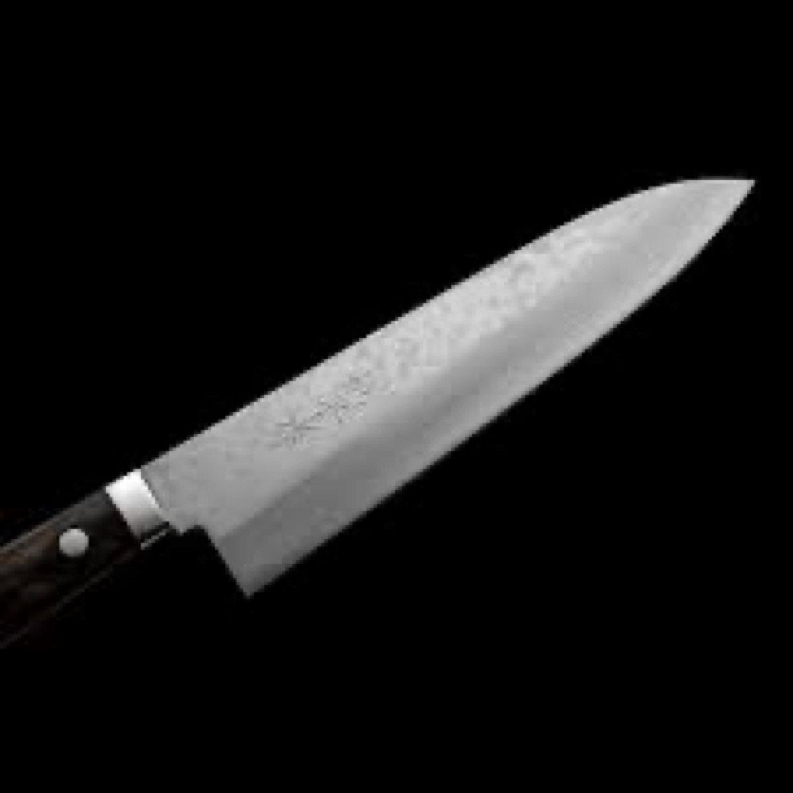
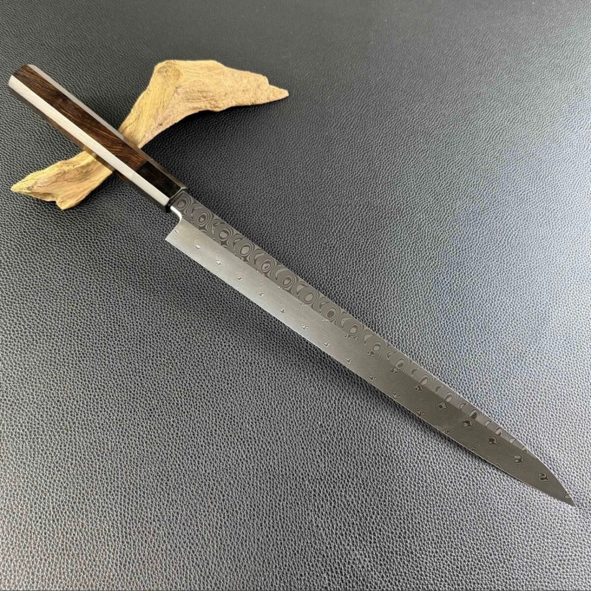
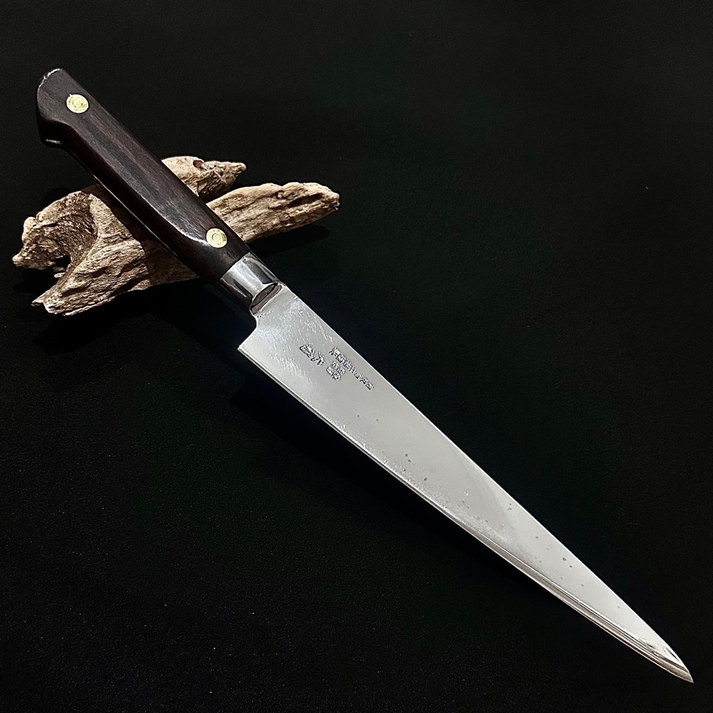

The Real Japan Line
Small Workshops, Serious Steel
Blades from small family workshops — the reason this brand exists. Limited pieces; several are one-of-one.

Masutani VG10 Santoku 170
A$200
At the market stall

Masutani VG10 Gyuto 185
A$210
At the market stall

Bonsei Damascus Yanagiba 270
A$420
One of one

Tamahagane Chef's Knife 218
A$480
One of one